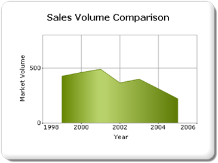

Exporting a chart to an image format enhances its portability, i.e., to an Excel sheet, Word document, PDF document, etc. By default, the chart is exported in the Bitmap format. The following table lists the file formats a chart can be exported to:
|
File Extension |
File Type |
|
.bmp |
BMP |
|
.jpg |
JPEG |
|
.jpeg |
JPEG |
|
.gif |
GIF |
|
.tiff |
TIFF |
|
.Wmf |
WMF |
|
.Png |
PNG |
|
.emf |
EMF |
|
.eps |
Post Script |
You can export the chart image as an image file in several different formats mentioned above, by determining the ChartImageFormat argument in the ExporttoImage function.
If the specified extension is none of the above listed formats, then the chart is exported as a Bitmap.
The chart can easily be exported as an image file in several different formats by determining the ChartImageFormat argument in the ExporttoImage function.
[C#]
chartModel.ExportToImage(FileName, ChartImageFormat.Jpeg);
